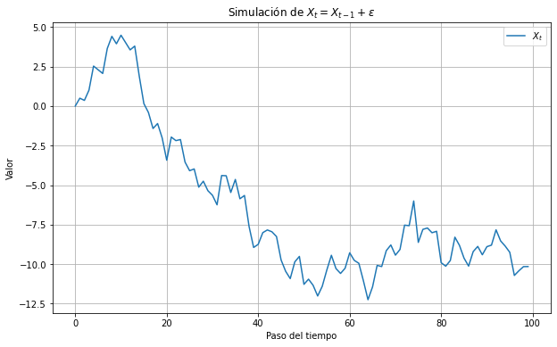
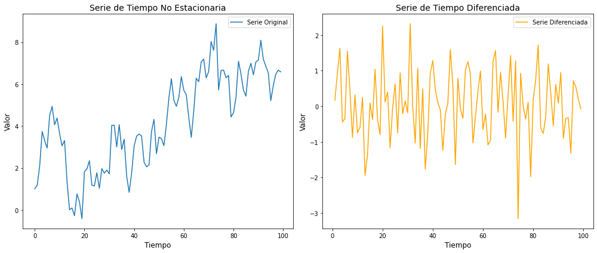
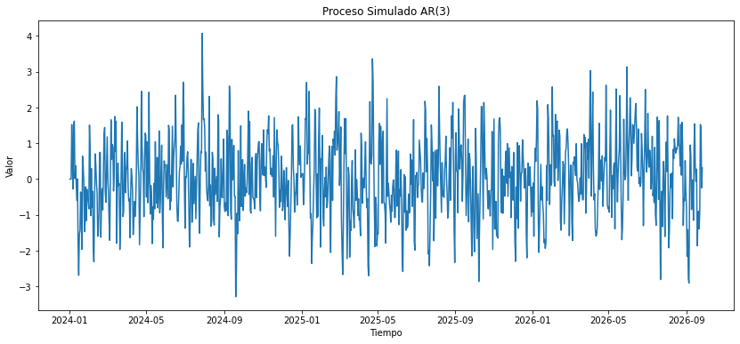
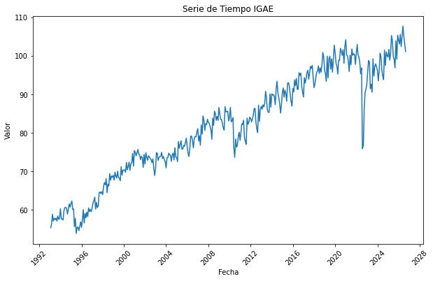
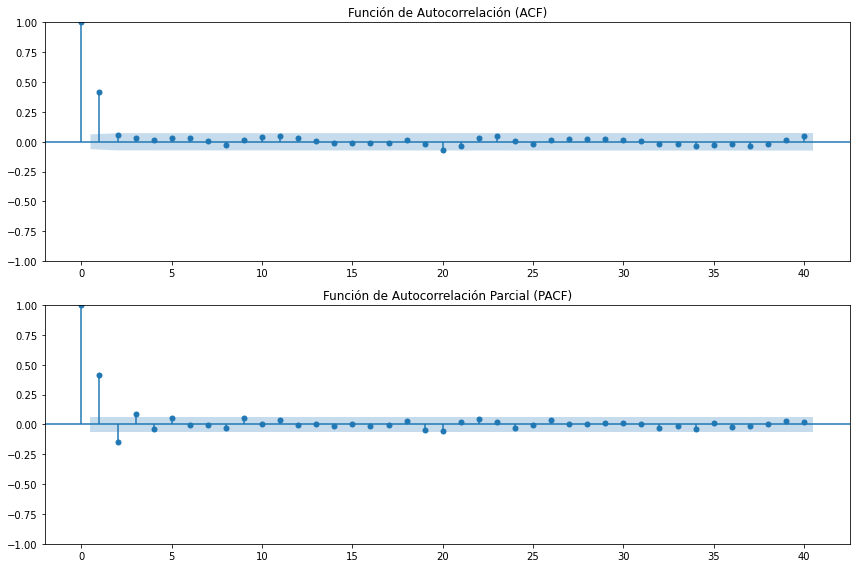

Cómo se usan los modelos de series de tiempo para proyectar las ventas en una empresa#
Отныне время будет течь по прямой; Шаг вверх, шаг вбок – их мир за спиной. Я сжег их жизнь, как ворох газет – Остался только грязный асфальт.
Рок-н-ролл мертв Аквариум
Introducción#
Si lo que buscas es una herramienta para predecir el comportamiento de una variable en el tiempo, esto es lo más cercano que encontrarás.
La frase “series de tiempo” significa dos cosas:
Modelos que analizan la naturaleza de fluctuaciones temporales de una variable (o varias).
Registros regulares de datos de una variable en el tiempo (p. ej. registros mensuales del Producto Interno Bruto).
El supuesto clave de las series de tiempo es que podemos extraer información sobre el comportamiento de nuestros datos sólo con el registro de su comportamiento en el tiempo. Si lo piensas, es un supuesto fuerte. Pero pronto verás que aplicando algunos trucos, este supuesto puede llegar a ser muy razonable.
Para qué se usan las series de tiempo#
Los modelos de series de tiempo son muy populares en todas las ciencias.
Hay aplicaciones en sismología, medicina, epidemiología, e incluso para predecir los rendimientos agrícolas. Pero uno de los usos más populares de las series de tiempo son los negocios.
Los usos en negocios de las series de tiempo incluyen:
Proyección de ventas.
Predicción de demanda.
Finanzas.
Energía.
Mercados financieros.
Optimización de inventarios.
Lo que tienen en común estos usos es que conocer los valores en el futuro es crítico.
En este capítulo veremos los modelos más relevantes para el análisis de series de tiempos. Veremos también cómo comprobar su capacidad de predecir causalidad. Finalmente, veremos aplicaciones específicas de los negocios.
Propiedades de las Series de Tiempo#
Definimos una serie de tiempo como una secuencia \(\{X_t\}\) de observaciones de una variable aleatoria en el tiempo.
Las observaciones \(X_t\) tienen a \(t\) como subíndice, que indica el momento en el tiempo de la observación. Esto nos permite crear modelos sobre el comportamiento de la variable en el tiempo. Un ejemplo es una caminata aleatoria:
donde \(\varepsilon\) es un ruido blanco.
import numpy as np
import matplotlib.pyplot as plt
# Fijar la semilla del generador de números aleatorios para reproducibilidad
np.random.seed(42)
# Parámetros
N = 100 # Número de pasos en el tiempo
sigma = 1 # Desviación estándar del ruido
X_0 = 0 # Valor inicial
# Inicializar el arreglo para X_t
X_t = np.zeros(N)
X_t[0] = X_0
# Generar el proceso
for t in range(1, N):
epsilon = np.random.normal(0, sigma) # Generar el ruido
X_t[t] = X_t[t-1] + epsilon # Actualizar el valor de X_t
# Graficar el proceso
plt.figure(figsize=(10, 6))
plt.plot(X_t, label='$X_t$')
plt.xlabel('Paso del tiempo')
plt.ylabel('Valor')
plt.title('Simulación de $X_t = X_{t-1} + \\varepsilon$')
plt.legend()
plt.grid(True)
plt.show()

Cualquier parecido con una serie de tiempo real, es mera coincidencia.
Estacionariedad#
En un sentido intuitivo, una serie de tiempo es estacionaria cuando las propiedades estadísticas del proceso que genera la serie de tiempo no cambian en el tiempo.
Hay mucha filosofía detrás de esa definición. Para empezar, tenemos el supuesto de que existe un proceso que genera el comportamiento de la serie de tiempo. Luego hay que notar que esta definición no implica que no existan cambios de la serie en el tiempo, sólo que la forma en que los datos cambian permanecen constantes.
Por eso es un concepto clave: sin estacionariedad, muchos modelos no funcionan.
En el apéndice de este capítulo te dejo las definiciones formales de estacionariedad y sus ideas claves. En resumen:
Podemos detectar si un modelo es estacionario usando la prueba Dickey-Fuller: si el p-value de nuestra prueba es inferior a 0.05, entonces nuestra serie es estacionaria.
Si nuestra serie no es estacionaria, podemos diferenciarla. La serie se diferencia restando a cada elemento su rezago \(X_t - X_{t-1}\).
El siguiente código hace una simulación de la serie de tiempo \(y_t = \beta_0 + \beta_1 t + \phi y_{t-1} + \varepsilon_t\), así como su diferencia. Se muestran los gráficos correspondientes y los resultados de la prueba Dickey-Fuller, hecha con la paquetería statsmodels.
import numpy as np
import pandas as pd
import matplotlib.pyplot as plt
from statsmodels.tsa.stattools import adfuller
# Parámetros del modelo
np.random.seed(42) # Para reproducibilidad
n = 100 # Número de observaciones
beta0 = 0.5 # Intercepto
beta1 = 0.01 # Tendencia
phi = 0.8 # Coeficiente autoregresivo
epsilon = np.random.normal(0, 1, n) # Términos de error
# Generar la serie de tiempo
t = np.arange(n) # Tiempo
y = np.empty(n)
y[0] = beta0 + beta1 + epsilon[0] # Inicializar la primera observación
for i in range(1, n):
y[i] = beta0 + beta1 * t[i] + phi * y[i-1] + epsilon[i]
# Diferenciar la serie para conseguir estacionariedad
y_diff = np.diff(y)
# Prueba de Dickey-Fuller para la serie original y diferenciada
adf_result_original = adfuller(y)
adf_result_diff = adfuller(y_diff)
# Crear los gráficos
fig, axs = plt.subplots(1, 2, figsize=(14, 6))
# Serie original
axs[0].plot(t, y, label='Serie Original')
axs[0].set_title('Serie de Tiempo No Estacionaria', fontsize=14)
axs[0].set_xlabel('Tiempo', fontsize=12)
axs[0].set_ylabel('Valor', fontsize=12)
axs[0].legend()
# Serie diferenciada
axs[1].plot(t[1:], y_diff, label='Serie Diferenciada', color='orange')
axs[1].set_title('Serie de Tiempo Diferenciada', fontsize=14)
axs[1].set_xlabel('Tiempo', fontsize=12)
axs[1].set_ylabel('Valor', fontsize=12)
axs[1].legend()
plt.tight_layout()
plt.show()
(adf_result_original[0], adf_result_original[1], adf_result_diff[0], adf_result_diff[1])

(-2.297082991922703,
0.1729104907141269,
-6.61625846070549,
6.19646154282778e-09)
Algunos puntos relevantes.
Normalmente cuando observas una serie con una tendencia como la que se muestra en el primer modelo, podemos esperar que la serie no sea estacionaria.
Por lo general una diferencia debería ser suficiente para lograr estacionariedad. Es posible hacer dos o más diferencias al modelo, pero hay que ser cautelosos, pues podrías hacer la serie extremadamente volátil e introducir patrones artificiales en los datos.
Si con una o dos diferencias no logras generar estacionariedad en la serie de tiempo, vale la pena revisar si no existen otros aspectos como cambios estructurales o estacionalidad en la serie. Estos aspectos se ven más adelante con modelos específicos.
El modelo ARIMA es un ejemplo de un modelo que funciona cuando la serie es estacionaria. Es también un modelo popular por su flexibilidad de uso y lo poderoso de sus resultados. Veamos más a fondo.
El modelo ARIMA#
El modelo ARIMA es como tener una bola de cristal que proyecta el futuro con base en el comportamiento en el pasado y nada más.
Una idea muy intuitiva cuando vemos un gráfico de líneas es que podemos simplemente seguir dibujando. Después de todo, tiene mas sentido pensar que la línea seguirá una misma tendencia a que el siguiente número será totalmente aleatorio. Esa es la idea básica detrás del modelo ARIMA.
El modelo ARIMA asume una relación lineal entre las variables y sus rezagos.
Observa el siguiente modelo:
Nota que es básicamente un modelo de regresión lineal, con la única diferencia de que la variable independiente y la dependiente son la misma. La historia que este modelo cuenta es que el valor de \(X\) en el periodo \(t\) depende de su valor en el periodo \(t-1\).
Este es un modelo AR(1).
Modelos AR(p)#
El predictor más lógico del valor de una variable en el tiempo son sus rezagos.
Dicho de otra manera: la mejor manera de saber cuáles son las ventas del próximo año es observando las ventas del próximo año. Es un modelo sencillo, pero muy poderoso. El modelo AR(\(p\)) asume que el valor de \(y_t\) depende linealmente de los primeros \(p\) rezagos de la serie.
Observa la siguiente simulación de un modelo AR(3).
import numpy as np
import pandas as pd
import matplotlib.pyplot as plt
# Establecer la semilla para reproducibilidad
np.random.seed(42)
# Número de observaciones
n = 1000
# Coeficientes del proceso AR(3)
phi = np.array([0.5, -0.2, 0.1])
# Término de ruido
sigma = 1
epsilon = np.random.normal(loc=0, scale=sigma, size=n)
# Inicializando la serie temporal
y = np.zeros(n)
# Generando el proceso AR(3)
for t in range(3, n):
y[t] = phi[0] * y[t-1] + phi[1] * y[t-2] + phi[2] * y[t-3] + epsilon[t]
# Creando un índice de series temporales
dates = pd.date_range(start='2024-01-01', periods=n)
# Convirtiendo a una serie de pandas para graficar
y_series = pd.Series(y, index=dates)
# Graficando
plt.figure(figsize=(14, 6))
plt.plot(y_series)
plt.title('Proceso Simulado AR(3)')
plt.xlabel('Tiempo')
plt.ylabel('Valor')
plt.show()

Estamos haciendo trampa.
Estoy creando una simulación de un modelo donde
La ventaja es que sabemos que \(\phi_1 = 0.5\), \(\phi_2 = -0.2\) y \(\phi_3 = 0.1\), y podemos hacer pruebas con python para aprender a hacer modelos AR.
Estos son los pasos:
Paso #1: Verifica si tu serie de tiempo es estacionaria.#
La estacionariedad es lo que permite que los modelos sean consistentes. Este es el código:
from statsmodels.tsa.stattools import adfuller
# Realizando el test ADF
adf_result = adfuller(y_series)
# Extrayendo el valor p y los valores críticos
p_value = adf_result[1]
critical_values = adf_result[4]
adf_result, p_value, critical_values
((-15.31091470485936,
4.187673159303107e-28,
2,
997,
{'1%': -3.4369259442540416,
'5%': -2.8644432969122833,
'10%': -2.5683158550174094},
2739.6857321374964),
4.187673159303107e-28,
{'1%': -3.4369259442540416,
'5%': -2.8644432969122833,
'10%': -2.5683158550174094})
Aprendamos a interpretar esta prueba:
La prueba se llama Dickey-Fuller Aumentada (ADF). Se usa para identificar la presencia de raíces unitarias. Identificar estacionariedad directamente requeriría que supiéramos el proceso que genera la serie de tiempo. En nuestro caso lo sabemos porque nosotros lo generamos, pero en la vida real eso es justo lo que queremos estimar.
Una serie de tiempo tiene raíces unitarias si se puede representar por el proceso donde las raíces de la ecuación característica son iguales a uno (o están en el círculo unitario de un espacio complejo.
Especificación del modelo. La prueba ADF se basa en la estimación del modelo siguiente:
La hipótesis nula de la prueba ADF es que la serie de tiempo tiene raíz unitaria (\(\gamma = 0\)), lo que significa que no es estacionaria. La hipótesis alternativa es que la serie de tiempo no es estacionaria (\(\gamma < 0\)).
En otras palabras, como el p-value es muy pequeño (\(p<0.01\)), podemos interpretar que nuestra serie no es estacionaria.
Paso #2: Si la serie no es estacionaria, considera transformarla para hacerla estacionaria.#
Hay transformaciones que resultan naturales a una serie de tiempo. Por ejemplo, el indicador general de la actividad Económica es evidentemente No-estacionario.
# Importar las librerías necesarias
import pandas as pd
import matplotlib.pyplot as plt
# URL de los datos IGAE de INEGI
url = 'https://www.inegi.org.mx/contenidos/programas/igae/2018/tabulados/ori/IGAE_2.xlsx'
# Cargar los datos en un DataFrame de pandas
igae_data = pd.read_excel(url, skiprows=5)
# Mostrar las primeras filas del DataFrame para verificar los datos
print(igae_data.head())
# Paso 1: Eliminar la primera fila que no contiene datos, si aún no se ha hecho
igae_data_cleaned = igae_data.drop(igae_data.index[0])
# Restablecer el índice después de eliminar la fila
igae_data_cleaned.reset_index(drop=True, inplace=True)
# Asumiendo que la fila "Total" es la primera fila después de limpiar
total_series = igae_data_cleaned.iloc[0, 1:].transpose()
# Excluir las columnas que no sean de meses y calcular el periodo
monthly_columns = [col for col in igae_data_cleaned.columns if col not in ['Unnamed: 0', 'Anual.30']] # Ajustar las columnas excluidas según sea necesario
periods = len(monthly_columns)
# Crear un rango de fechas para el índice
start_year = 1993 # Año de inicio, ajustar según los datos
start_month = 1 # Enero como mes de inicio
dates = pd.date_range(start=pd.Timestamp(year=start_year, month=start_month, day=1),
periods=len(total_series),
freq='M')
# Crear un DataFrame a partir de la serie para usar el índice de fecha
df = pd.DataFrame(total_series.values, index=dates, columns=['Valor IGAE'])
# Graficar los datos
plt.figure(figsize=(10, 6))
plt.plot(df.index, df['Valor IGAE'])
plt.title('Serie de Tiempo IGAE')
plt.xlabel('Fecha')
plt.ylabel('Valor')
plt.xticks(rotation=45) # Rotar las fechas para una mejor legibilidad
plt.show()
Unnamed: 0 Enero Febrero \
0 Índice de volumen físico base 2018=100 NaN NaN
1 Total 55.434714 56.456934
2 Actividades primarias 58.796198 60.763816
3 111 - Agricultura 54.888804 56.855371
4 112 - Cría y explotación de ani... 67.248422 68.977815
Marzo Abril Mayo Junio Julio Agosto \
0 NaN NaN NaN NaN NaN NaN
1 58.900516 57.135808 57.891816 57.475444 57.902360 57.123924
2 55.964953 58.989164 61.762078 63.641132 72.628654 57.488221
3 50.409267 52.261002 55.582213 57.282877 68.319936 42.898071
4 67.346044 73.409111 75.161246 77.687091 81.891772 88.914213
Septiembre ... Abril.31 Mayo.31 Junio.31 Julio.31 Agosto.31 \
0 NaN ... NaN NaN NaN NaN NaN
1 58.482065 ... NaN NaN NaN NaN NaN
2 54.105257 ... NaN NaN NaN NaN NaN
3 38.338437 ... NaN NaN NaN NaN NaN
4 88.045743 ... NaN NaN NaN NaN NaN
Septiembre.31 Octubre.31 Noviembre.31 Diciembre.31 Anual.31
0 NaN NaN NaN NaN NaN
1 NaN NaN NaN NaN NaN
2 NaN NaN NaN NaN NaN
3 NaN NaN NaN NaN NaN
4 NaN NaN NaN NaN NaN
[5 rows x 417 columns]

Con algo de experiencia vas a aprender a notar cuando una serie no es estacionaria sólo al ver el gráfico, pero siempre debes de corroborar tus sospechas haciendo una prueba estadística.
Paso #3: Identifica el orden del rezago \(p\). La siguiente pregunta que tenemos es ¿cuántos rezagos debo usar en mi modelo?#
Para resolver este problema usamos la función de autocorrelación (AFC) y la función de autocorrelación parcial (PAFC). Este es el gráfico que generan.
from statsmodels.graphics.tsaplots import plot_acf, plot_pacf
# Creando figuras para los gráficos
fig, (ax1, ax2) = plt.subplots(2, 1, figsize=(12, 8))
# Graficando la Función de Autocorrelación (ACF)
plot_acf(y_series, ax=ax1, lags=40) # y_series es la serie temporal
ax1.set_title('Función de Autocorrelación (ACF)')
# Graficando la Función de Autocorrelación Parcial (PACF)
plot_pacf(y_series, ax=ax2, lags=40) # y_series es la serie temporal
ax2.set_title('Función de Autocorrelación Parcial (PACF)')
plt.tight_layout() # Ajusta automáticamente los subgráficos para que encajen en el área de la figura
plt.show()
/usr/local/lib/python3.9/site-packages/statsmodels/graphics/tsaplots.py:348: FutureWarning: The default method 'yw' can produce PACF values outside of the [-1,1] interval. After 0.13, the default will change tounadjusted Yule-Walker ('ywm'). You can use this method now by setting method='ywm'.
warnings.warn(

El truco para identificar el orden del rezago en un modelo AR(\(p\)) es mirar el PAFC. El punto en el que la autocorrelación cae por debajo del nivel de significancia (no está cubierto por el color en el gráfico), es el nivel de rezago que debemos usar.
En este caso el gráfico nos muestra una caída después del tercer rezago, que es lo que esperamos con el modelo que hemos diseñado.
Paso #4: Ejecutar el modelo y mostrar los resultados#
Finalmente estamos listos para ejecutar nuestro modelo AR(3).
from statsmodels.tsa.ar_model import AutoReg
# Ajustando un modelo AR(3)
model = AutoReg(y_series, lags=3)
model_fitted = model.fit()
# Mostrando los resultados
model_results = model_fitted.summary()
model_results
| Dep. Variable: | y | No. Observations: | 1000 |
|---|---|---|---|
| Model: | AutoReg(3) | Log Likelihood | -1394.228 |
| Method: | Conditional MLE | S.D. of innovations | 0.980 |
| Date: | Wed, 03 Apr 2024 | AIC | 2798.455 |
| Time: | 10:47:15 | BIC | 2822.979 |
| Sample: | 01-04-2024 | HQIC | 2807.777 |
| - 09-26-2026 |
| coef | std err | z | P>|z| | [0.025 | 0.975] | |
|---|---|---|---|---|---|---|
| const | 0.0187 | 0.031 | 0.601 | 0.548 | -0.042 | 0.080 |
| y.L1 | 0.4882 | 0.032 | 15.468 | 0.000 | 0.426 | 0.550 |
| y.L2 | -0.1837 | 0.035 | -5.298 | 0.000 | -0.252 | -0.116 |
| y.L3 | 0.0851 | 0.032 | 2.693 | 0.007 | 0.023 | 0.147 |
| Real | Imaginary | Modulus | Frequency | |
|---|---|---|---|---|
| AR.1 | 2.0962 | -0.0000j | 2.0962 | -0.0000 |
| AR.2 | 0.0312 | -2.3674j | 2.3676 | -0.2479 |
| AR.3 | 0.0312 | +2.3674j | 2.3676 | 0.2479 |
Lo que podemos observar en los resultados de este modelo:
Los coeficientes son efectivamente cercanos a los que hicimos en la simulación, con un valor significativo (p < 0.05)
La sección donde dice Real e Imaginario nos ayudan a confirmar que nuestro modelo es estable (i.e. todas las unidades de la ecuación característica están fuera del círculo unitario).
Paso #5: Comparar AIC y BIC para encontrar el mejor modelo#
El criterio de Información de Akaike (AIC) y el Criterio de información Bayesiano son medidas que nos ayudan a identificar el “mejor modelo” en términos de la información que podemos obtener.
La idea es esta: cuando incluimos más variables a nuestro modelo, podemos tener mayor precisión, pero nos arriesgamos a un sobre-ajuste. Veamos que sucede si comparamos AR(3) con los modelos AR(2) y AR(4).
La regla de oro es el que el modelo con AIC y BIC más bajo, gana.
# Ajustando modelos AR(2) y AR(4) y comparando AIC y BIC
model_ar2 = AutoReg(y_series, lags=2).fit()
model_ar4 = AutoReg(y_series, lags=4).fit()
# Extrayendo AIC y BIC para cada modelo
aic_bic_comparison = pd.DataFrame({
'Model': ['AR(2)', 'AR(3)', 'AR(4)'],
'AIC': [model_ar2.aic, model_fitted.aic, model_ar4.aic],
'BIC': [model_ar2.bic, model_fitted.bic, model_ar4.bic]
})
aic_bic_comparison
| Model | AIC | BIC | |
|---|---|---|---|
| 0 | AR(2) | 2805.485454 | 2825.108467 |
| 1 | AR(3) | 2798.455225 | 2822.978979 |
| 2 | AR(4) | 2794.998432 | 2824.420916 |
Interesante.
El modelo AR(4) tiene un nivel menor de AIC, con un BIC ligeramente mayor. Eso quiere decir que, si no supiéramos el modelo real, bien podríamos considerar el modelo AR(4) como viable.
Generalmente, el AIC se enfoca más en la calidad del ajuste, mientras que el BIC añade una penalización más fuerte por la cantidad de parámetros, favoreciendo modelos más simples.
Paso 6: Generar proyecciones#
Finalmente, podemos crear proyecciones a partir de nuestros modelos. En el siguiente código, dividimos la base de datos en datos de entrenamiento (train) y de prueba (test). La idea es comprobar que nuestras proyecciones ayudan a predecir el valor que estamos buscando.
from sklearn.metrics import mean_absolute_error
# Dividiendo los datos en entrenamiento y prueba
train_data = y_series[:int(0.9 * len(y_series))]
test_data = y_series[int(0.9 * len(y_series)):]
# Ajustando el modelo AR(3) al conjunto de entrenamiento
model_train = AutoReg(train_data, lags=3).fit()
# Haciendo predicciones en el conjunto de prueba
predictions = model_train.predict(start=len(train_data), end=len(train_data) + len(test_data) - 1, dynamic=False)
# Calculando el Error Absoluto Medio (MAE)
mae = mean_absolute_error(test_data, predictions)
mae
---------------------------------------------------------------------------
ModuleNotFoundError Traceback (most recent call last)
<ipython-input-9-18ecff461b8f> in <module>
----> 1 from sklearn.metrics import mean_absolute_error
2
3 # Dividiendo los datos en entrenamiento y prueba
4 train_data = y_series[:int(0.9 * len(y_series))]
5 test_data = y_series[int(0.9 * len(y_series)):]
ModuleNotFoundError: No module named 'sklearn'
Un gráfico nos puede ayudar a tener mayor claridad. Nota que la proyección es sólo una línea horizontal en el valor medio de los datos. Si lo pensamos bien, considerando el comportamiento de los datos, es una predicción razonable!
# Creando un gráfico para comparar los valores reales y las predicciones
plt.figure(figsize=(14, 7))
plt.plot(train_data, label='Training Data')
plt.plot(test_data, label='Actual Value')
plt.plot(predictions, label='Forecast', linestyle='--')
plt.title('AR(3) Forecast vs Actuals')
plt.xlabel('Date')
plt.ylabel('Value')
plt.legend()
plt.show()
Medias Móviles: La MA de ARIMA#
El procedimiento que vimos antes se puede aplicar igual con un modelo más complejo.
En ocasiones, nos enfrentamos a dos problemas:
Los rezagos de la variable no son suficientes para explicar su comportamiento.
Los rezagos de los errores muestran una tendencia.
Lo curioso es que ambos problemas los podemos solucionar con la inclusión de los rezagos al modelo. Considera el siguiente modelos ARMA(\(p\), \(q\)), que contiene un rezago (\(p = 1\)) y tres rezagos del error (\(q = 3\)).
import numpy as np
import pandas as pd
import matplotlib.pyplot as plt
from statsmodels.tsa.arima.model import ARIMA
# Estableciendo la semilla para reproducibilidad
np.random.seed(42)
# Número de observaciones
n = 1000
# Generando un término de ruido
epsilon = np.random.normal(loc=0, scale=1, size=n)
# Inicializando la serie temporal
y = np.zeros(n)
# Parámetros para el proceso ARMA(1,3)
phi = 0.5 # Coeficiente AR
theta = [0.1, -0.2, 0.3] # Coeficientes MA
# Generando el proceso ARMA(1,3)
for t in range(4, n):
y[t] = phi * y[t-1] + epsilon[t] + theta[0] * epsilon[t-1] + theta[1] * epsilon[t-2] + theta[2] * epsilon[t-3]
# Creando un índice de series temporales
dates = pd.date_range(start='2024-01-01', periods=n)
# Convirtiendo a una serie de pandas para graficar y modelar
y_series_arma = pd.Series(y, index=dates)
# Ajustando un modelo ARMA(1,3)
arma_model = ARIMA(y_series_arma, order=(1, 0, 3))
arma_result = arma_model.fit()
# Creando predicciones con el modelo ARMA(1,3) para los últimos 100 puntos de datos
arma_predictions = arma_result.predict(start=n-100, end=n-1)
# Creando un gráfico para comparar los valores reales y las predicciones de ARMA(1,3)
plt.figure(figsize=(14, 7))
plt.plot(y_series_arma[n-100:], label='Actual Values')
plt.plot(arma_predictions, label='ARMA(1,3) Predictions', linestyle='--')
plt.title('ARMA(1,3) Simulation')
plt.xlabel('Date')
plt.ylabel('Value')
plt.legend()
plt.show()
arma_result.summary()
Este modelo se ve más interesante.
Los pasos que seguimos en la sección anterior aplican también aquí. De igual manera, si nos enfrentamos a un modelo ARMA, debemos verificar que sea estacionario, identificar el orden del proceso y hacer nuestras proyecciones.
Una diferencia clave son las funciones ACF y PACF. Para detectar el orden MA(\(q\)) revisamos donde la función ACF corta de manera abrupta.
from statsmodels.graphics.tsaplots import plot_acf, plot_pacf
# Plotting ACF and PACF for the ARMA(1,3) model
fig, (ax1, ax2) = plt.subplots(2, 1, figsize=(12, 8))
# ACF
plot_acf(y_series_arma, ax=ax1, lags=40)
ax1.set_title('Autocorrelation Function (ACF) for ARMA(1,3)')
# PACF
plot_pacf(y_series_arma, ax=ax2, lags=40)
ax2.set_title('Partial Autocorrelation Function (PACF) for ARMA(1,3)')
plt.tight_layout()
plt.show()
Lo que podemos observar:
En el gráfico ACF parece haber un rechazo significativo en el primer retardo y luego una disminución exponencial o una disminución sinusoidal amortiguada en los retardos subsiguientes. Esto es típico de un proceso AR(1) o un proceso ARMA con un componente AR(1). El hecho de que el gráfico ACF no se corte después de un número determinado de retardos sugiere la presencia de una componente AR.
El gráfico PACF muestra un rechazo significativo en el primer retardo y rechazos significativos en los retardos tercero y cuarto, lo cual es consistente con un proceso MA(3), ya que el PACF de un proceso MA(q) generalmente muestra rechazos significativos para los primeros \(q\) retardos y luego se corta.
En la práctica la interpretación del ACF y PACF puede ser más arte que ciencia. Se basa en la identificación de “cortes” y rechazos significativos, por lo que una interpretación plausible de estos gráficos sería que estamos mirando un proceso con una componente autoregresiva de orden 1 (AR(1)) y una componente de media móvil de orden 3 (MA(3)).
Apéndice#
Aquí van los temas que requieren una explicación adicional, pero que rompen el ritmo de la explicación principal si me extiendo en el texto.
Proceso Estocástico#
La palabra estocástico significa lo mismo que aleatorio.
La diferencia principal es que estocástico viene del griego, mientras que aleatorio viene del latín. Para definir correctamente lo que es un proceso estocástico necesitamos algunas definiciones adicionales que vienen de la teoría de la probabilidad:
Note
💡 Un espacio probabilístico es una tripla \((\Omega, \mathcal{F}, \mathbb{P})\) donde:
\(\Omega\) es un conjunto no vacío conocido como el espacio muestral.
\(\mathcal{F}\) es una \(\sigma\)-álgebra (se lee sigma-álgebra) de subconjuntos de \(\Omega\). Es decir, es una familia de subconjuntos cerrados con respecto a la unión contable y complementaria con respecto a \(\Omega\).
\(\mathbb{P}\) es una medida de probabilidad definida para todos lo miembros de \(\mathcal{F}\).
Ahora definamos las variables aleatorias
Note
💡 Una variable aletoria es una función \(x:\Omega\to\mathbb{R}\) tal que la imágen inversa de cualquier intervalo \((-\infty,a]\) pertenece a \(\mathcal{F}\), es decir, es una función medible.
Con estas definiciones, podemos llegar a nuestra definición de proceso estocástico:
Note
💡 Un proceso estocástico real es una familia de variables aleatorias reales \(\mathbf{X} = \{x_t(\omega) | t \in T\}\) definidas en el mismo espacio probabilístico \((\Omega,\mathcal{F},\mathbb{P})\). El conjunto \(T\) se le llama el espacio índice de los procesos. Si \(T\subset \mathbb{Z}\), entonces es un proceso estocástico discreto. Si \(T\) es un intervalo de \(\mathbb{R}\) entonces es un proceso estocástico contínuo.
Ruido blanco#
Un ruido blanco es un proceso estocástico que no tiene correlación serial con media cero y varianza constante finita.
Note
De manera formal, un proceso \(\{w_t \}\) es un ruido blanco si:
Su primer momento es siempre cero, es decir \(E[w_t] = 0\).
Su segundo momento es finito. Es decir, \(E(w_t - \mu)^2]<\infty\).
El momento cruzado \(E[w_s w_t]\) es cero, para \(s\neq t\). Es decir, \(\text{cov}(w_s,w_t) = 0\).
Definición formal de estacionariedad#
Raíces unitarias#
Consideremos un proceso autorregresivo de orden \(p\):
Donde \(\varepsilon_t\) representa un ruido blanco. Podemos reescribir el mismo proceso como
donde \(L^i\) es el operador de rezago. La parte entre paréntesis de la izquierda se conoce como la ecuación característica de la serie de tiempo. Consideremos la raíz de esta ecuación:
Si la raíz de la ecuación es \(m =1\), entonces el proceso estocástico tiene raíz unitaria. Esto se suele comprobar con la prueba Dickey-Fuller.
Referencias#
Abdul Jalil, N. H. R., & Özcan, B., & Öztürk, I. (Eds.). (2019). Time Series Analysis (Stationarity, Cointegration, and Causality). En Environmental Kuznets Curve (EKC) (pp. 85-99). Academic Press. https://doi.org/10.1016/B978-0-12-816797-7.00008-4